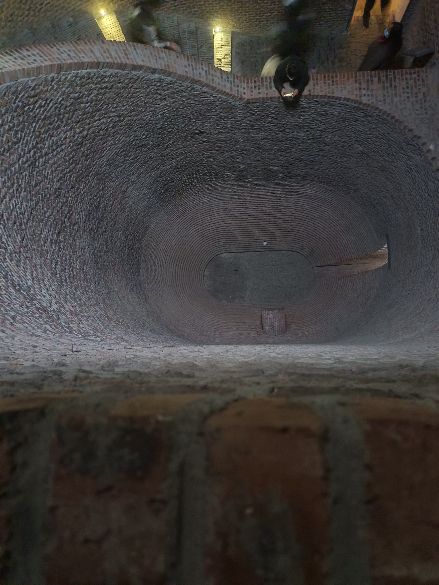
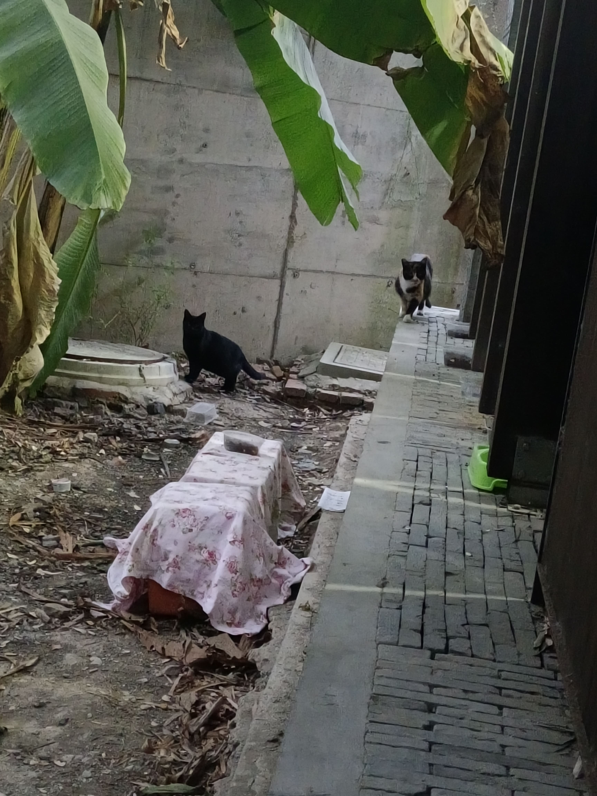
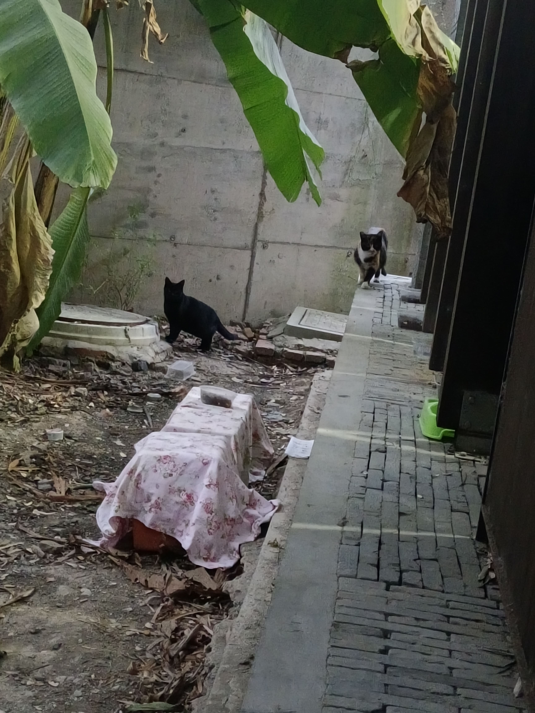
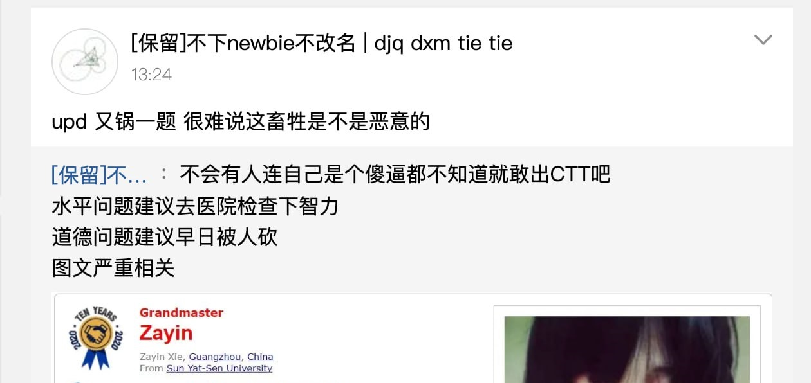

CTT 2023 游记
在 OI 系列比赛中，从 CTT 开始就是 IOI 赛制了。因为我不冲国家队，这场比赛对于来说重在参与，就写个游记纪念一下。
CTT 一共考四天，我的目标是进前 30，然后去 CTS，所以还是要认真考。
省流：我 rank 9，前五（可能的国家队）如下。
| 排名 | 名字 | 标准分 |
|---|---|---|
| 1 | zky | 47.73 |
| 2 | gyc | 42.98 |
| 3 | hlt | 41.95 |
| 4 | skc | 40.92 |
| 5 | sjy | 40.75 |
Day0
中午到了统一安排的酒店，据说比较高档，600 一天。苏州气温低得跟成都大冬天差不多，到房间发现热成夏天了，有点受不了，把空调调成了制冷模式，过了一会丝毫没有改观。看到 qq 群里有选手说这个制冷模式是假的，不管什么模式都是制热，所以最后我把空调关了开窗户。酒店洗手间的隔挡玻璃可以调透明度，是用来观察别人洗澡的吗？
下午到比赛场地试机，地点是 CCF 的一栋楼。

比赛用机有两个键盘可以用，笔记本键盘和外接键盘。比较喜欢笔记本键盘，但是它有两个阴间之处，Fn 在 ctrl 左边，F1~F12 默认是控制键，不能作为快捷键。
晚上 9:40 就睡了，不过半夜醒了好多次，有时感觉冷有时感觉热。
Day1
开场的前 10 分钟做了一些准备工作，包含编译运行快捷键，数据生成器和对拍脚本等等。
-
T1: 看了 T1，想着想着发现和 学习轨迹 很像，那做法肯定就是贪心了，交了个 的暴力贪心上去 0 分了，又交了一次还是 0 分，于是就开始对拍了，通过对拍把贪心修改了若干次后终于对了，最后把 改成了 就 AC 了。
T1 做完时刚好过了 2 个小时。
-
T3: 同时看了 T2 和 T3，发现 T3 的 20 分很简单，马上写了，然后继续想 T3。想了一会儿就编出来了一个做法，因为时间充裕就决定拿下 T3，写了一小部分就发现做麻烦了，然后删掉之前的代码开始写新的做法。我先把数据结构的部分用暴力实现充当，调对后再写数据结构，两部分都调了不少时间。
T3 又做了 2 个小时。
-
T2: 最后的一个小时来做 T2，花了 分钟拿了 分，然后就开始想更后面的部分分，突然就会正解了，不过比赛很快就结束了。
得分 ，rank 21。
排名比我预期的要差，因为我觉得我发挥的还行。我应该是代码能力上输了，如果代码能力强的话就能 AK。
下午有讲题和参观活动，参观活动就是参观一楼的展厅，里面有一些计算机相关的知识和物件。


图片里面的字放大可以看清。
晚上 10:00 睡了，半夜还是感觉温度不合适。
Day2
开场的前 10 分钟做准备工作。
-
T1: 先看的 T1，一道构造题，它看起来很不友好，有种 喵了个喵 的既视感，不敢停太久了，所以想了 20 分钟就去看 T2 了。
-
T2: T2 看起来很友好，转化了一下就变成了经典问题 莫队二次离线。
总共做了 75 分钟左右。 -
T3: T3 看起来也比 T1 友好，代码写了 3.3KB，写完就过样例了，然后交上去 WA 了，开始写对拍，结果拍不出来，最后通过在代码里加
assert提交的方式，确定了错误的范围，看了一会原来是数组开小 了，wtf?总共做了 105 分钟左右，要是数组没开小就能少 30 分钟。
-
T1: 最后 1.5 小时回来搞 T1，先写了一个部分分，交上去 0 了。我意识到要准备对拍，就先写个暴搜，获得了 15 分，然后又写了 checker 和 generator，把最开始的部分分改对了，又多了 10 分，这时我有一个不知道对不对的做法，写完发现不对，不断地改，也没有改对，但是多获得了 15 分。
得分 ，rank 4。
说不定没被数组开小耽误 30 分钟就能 AK 了。
听了 T1 的讲解后知道我的做法和正解差得不远，甚至把我的代码删掉一部分后可以多 20 分，有点离谱。
还知道了两个有趣的事实：
- 构造题也可以数据结构化，支持修改、输出方案的哈希值，为了验证方案是否正确，需要使用交互，每次输出哈希值后交互库可以选择性要求程序输出完整方案，验证前面的哈希值是否正确。
- 模 次方意义下，任何多项式都和一个不超过 次的多项式等价，因为 模 总是 ，所以任何多项式对它取模后都可以得到一个等价的多项式。
另外还和同学假想了一种魔怔的赛制，每个人都可以提前离场，每离场一个人，结束时间就提前半个小时，作为参赛选手，你的最优策略是…
晚上发现被子比较厚，即使不开空调盖上也会觉得热，所以就把空调开到了 30 度，不盖被子。
Day3
早上精神不太好，喉咙不舒服，不美好的一天开始了。
开场的前 15 分钟做准备工作，因为 debug 的配置文件写错了所以多了 5 分钟。
-
T1: 花了 15 分钟通看后，决定先开 T1，正常分析做法后发现有一步需要实数 FFT，好家伙。因为这题不取模，结果又会爆
int，所以还不能模 。总共做了 90 分钟。
-
T2: T2 是一道没有输入的构造题，得分取决于你的操作次数。前一个小时写了一个做法 0 分，看了好久才知道是做法假了，然后又不会了，之后写了 15 分的暴力，然后在还剩 1.5 小时的时候去看 T3 了。
-
T3: T3 是对符合条件的序列计数。先写了 7 分，然后猜了一个充要条件，交上去验证一下，结果不对。开始往最小割和费用流的角度去分析充要条件，不过放弃了，回来继续做 T2。
-
T2: 想到了一个正确的构造方法，41.36 分。
得分 ，rank 33。
不乐，都怪 T2。听完讲题后知道我 T2 的方向是对的，但是构造方法太复杂了，操作次数是正解的 20 倍，可能是脑子不好使，简单的构造想不到，只能编出复杂的构造。
听说 T1 是原题，还有选手做过，所以这一场的分数权重减半，爽！
下午去了御窑金砖博物馆。
图为烧制窑。
园区内猫很多。
 

Day4
10 分钟准备工作。
-
T1: 分析 20~30 分钟后大概会了，公告说数据和大样例有锅，正在修复。修好后 Itst 说“T1 已经修好了，大家可以提交了。”几秒钟后有人开始笑了，然后笑的人越来越多，我还没明白发生了什么。等我重新下载大样例后才发现，里面有一个
std.cpp，然后这题就被删了。 -
T2: 想了一会就猜了个结论，不过发现不对。看到公告的补充说明后才知道我题意理解错了，在新的题意下原来的结论又对了。之后都比较顺利，一遍就 AC 了。
T2 总共做了 90 分钟。
-
T3: 此时还剩 2.5 小时，但交互题正是我最不擅长的，正解完全没思路，尝试了各种乱搞只得到 40 分。
得分 ，rank 6。
虽然排名比较好，但因为 T1 的事故，分数权重减半了。
听了交互题正解之后，知道这是我一辈子的不会的题。果然交互和构造是我的一生之敌。
放一个总榜：
| 排名 | 名字 | 标准分 |
|---|---|---|
| 9 | me | 36.58 |
| 1 | zky | 47.73 |
| 2 | gyc | 42.98 |
| 3 | hlt | 41.95 |
| 4 | skc | 40.92 |
| 5 | sjy | 40.75 |
| 6 | cl | 37.11 |
| 7 | fzw | 36.79 |
| 8 | cxy | 36.65 |
| 9 | me | 36.58 |
| 10 | dyq | 36.19 |
| … | … | … |
瓜

两次出锅都是 Zayin 的题，Day3 T1 是他在其他地方出的题，他又把这道题复用了。Day4 T1 在更新大样例的时候把 std.cpp 放进去了。他凭一己之力降低了 Day3 Day4 的权重。